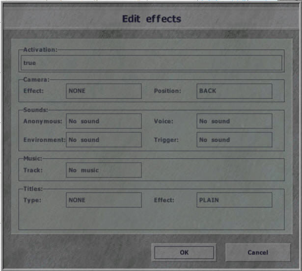

Triggers (Editor Object)
This is legacy VBS content. For the latest information on using triggers, see Triggers in the VBS Editor Manual.
Trigger Window
Introduction
Triggers are an essential function for mission designers. A trigger (sometimes called a sensor) allows a mission designer to control events within a mission. Some common uses for triggers are controlling the timing of squad moves, camera control in cutscene, or even play the appropriate music when the time is right.
Properties
Activation
There are several combinations that can be created to activate the trigger. The trigger can be used to check if east or west is present, not present, or even detected by other sides within the trigger. A trigger can also be used to set up radio commands. (Be aware though, that a unit that has been setCaptive will not trigger any detected events.)
A trigger can be linked to one particular unit or group by going into Group Mode (F2), and dragging a line from the trigger to the desired unit. After this the Activation field will be set to "Vehicle". It can then be changed to either "Whole group", "Group leader" or "Any group member".
If an activation is set to "repeatedly" the trigger first has to be 'deactivated' before it can fire again (e.g. if a unit activated the trigger by entering it, it will first have to leave it, before the trigger can become active again.)
Seized by...
Designed to allow easy detection of domination of one side in given area. "Seized by..." should be used only with "Time out" option selected. The level of dominance needed for activation of this trigger type is depending on Min, Mid and Max time given in "Time Out" section: if the dominance is really overhelming, min. time is enough for this trigger to get activated. If the dominance is less severe, the trigger will be activated after timed out to max. value. Note that this trigger estimates side strengths in the area based on their normalized firepower per time.
Example of typical usage to detect if the area of a trigger is seized by BLUFOR:
Create a trigger configured as:
Activation Seized by BLUFOR
Present
TimeOut 15-30-60
If Detected by BLUFOR is set, it limits the OPFOR units used for estimating balance of power in the trigger area only to those currently known to BLUFOR and the designer must ensure that entire trigger area is well known to BLUFOR before considering the area secured (or create multiple triggers that need to be active at the same time).
Type
What does the trigger do when activated
None
Guarded by OPFOR - Any OpFor squad with a Guard waypoint type will move to this trigger's location and await for ANY enemy contact on the ENTIRE island, then move there to engage the spotted enemy. Reference wiki for Guard waypoint type for more information on using this.
Guarded by BLUFOR - same as above, but for BlueFor.
Guarded by Independents - same as above, but for Independents.
Switch - switch a group to next waypoint series. The trigger should be synchronized with a cycle waypoint. You can use this to give a squad several series of waypoints which you can switch them between.
End #1 - terminate the mission
End #2
End #3
End #4
End #5
End #6
Lose
Countdown
Defines (in seconds) how long to wait until On Activation is fired after Condition was true. Min, Max and Mid allow you to add some randomization to the time.
Timeout
Defines (in seconds) random range from Min. to Max. for how long the trigger condition field expression must be active in order to make the trigger activated.
Condition
In addition to the 'Activation' options above, this field allows you to specify other conditions that have to be fulfilled before the Trigger activates. By default only the Boolean variable this is present in this field. It is set to the result of the main 'Activation' condition (e.g. 'east'/'present'). The expression in this field must return a Boolean value (e.g. "this && alive player"). Trigger conditions are tested every 0.5 seconds.
On Activation/Deactivation
Defines action that is performed when trigger condition changes to true or false. Expression must either be an assignment or return Nothing. Variable denoting trigger can be created by filling in name field. Array variable thisList will contain a list of all vehicles that met the trigger condition (e.g. hint format ["%1 units in area",count thisList]).
Effects
Trigger Effects Window
Allows the mission designer to add music, environmental sounds, or to display title messages. Many use the effects to create quick and easy cutscenes.
Scripting
Any of a trigger's properties which can be set in its definition window can also be set or modified via a script.
A list of relevant scripting commands is available in Activators - Triggers.